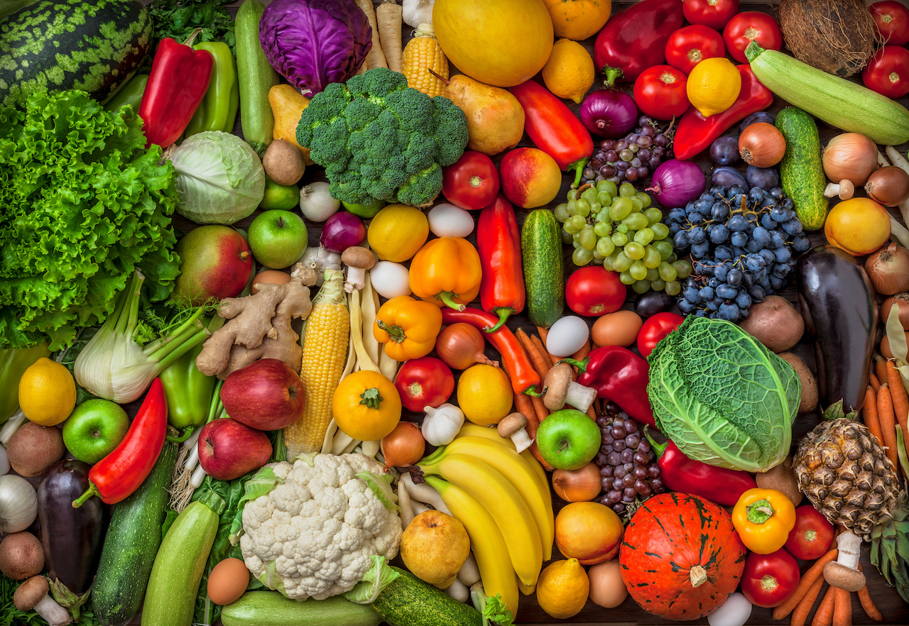

Diabetes Prediction and Diet Prescription
Hello {{ name }}!
The probability of you having diabetes is {{ percent }}%
{{ msg[0] }} the following diet can help {{ msg[1] }}

Vitamins = {{ vitamin }}%
- Green Leafy Vegetables
- Bell Pepper
- Noni Fruit
- Aloevera
Proteins = {{ prot }}%
- Fish
- Red Meat
- Dry fruits, Nuts, Peas, Seeds
- Egg
Fibers = {{ fib }}%
- Corn
- Avocados
- Berries, Pears
- Barley, Oats

Carbohydrates and Sugars = {{ carb }}%
- Banana
- Sweet Potatoes
- White Bread,Rice
- Sweets, Beverages
Also, a weekly walk of {{ walk }} hours or cycling of {{ walk-2 }} hours will greatly help you in maintaining your health.
Note: If you are unable to reduce the carbohydrates and sugars from your diet then you can increase the fibers in your diet.
Fibers greatly help in reducing sugars in our bodies.